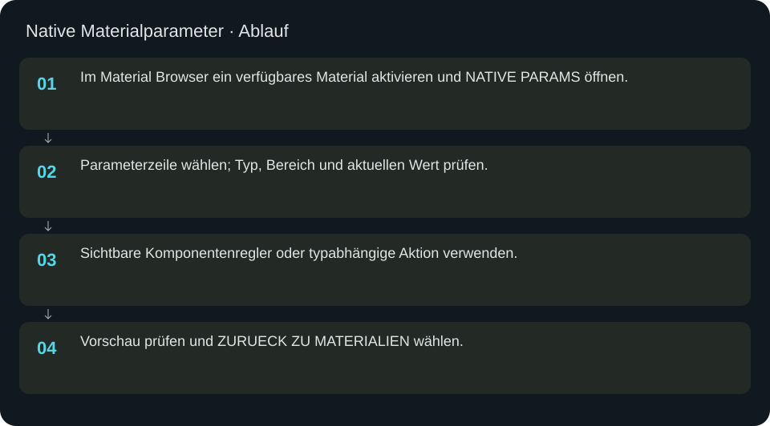
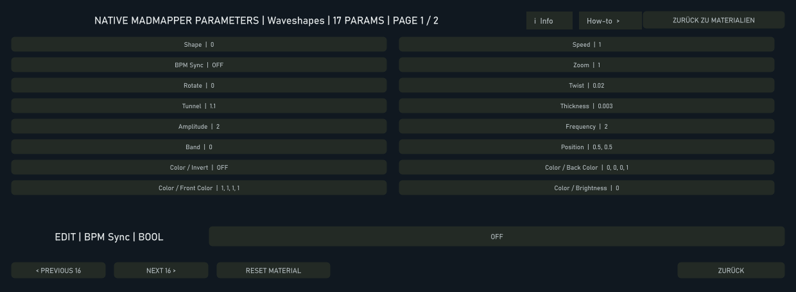

Native Materialparameter
Materialeigene GLSL-Parameter getrennt von den gemeinsamen Player-Reglern bearbeiten.
In welcher Reihenfolge?
- Im Material Browser ein verfügbares Material aktivieren und NATIVE PARAMS öffnen.
- Parameterzeile wählen; Typ, Bereich und aktuellen Wert prüfen.
- Sichtbare Komponentenregler oder typabhängige Aktion verwenden.
- Vorschau prüfen und ZURUECK ZU MATERIALIEN wählen.


Schritt für Schritt
Typgerechte Bedienung
Eine Zahl verwendet einen Regler, Vektor/Farbe mehrere Komponenten, diskrete Typen eine passende Aktion. Nicht jedes Material besitzt dieselben Felder. Ereignisse und Compile-Time-Parameter sind nicht beliebig als kontinuierliche Showautomation aufnehmbar; Meldungen und den angebotenen Typ beachten.
Beispiel
Ein importiertes Material aktivieren, NATIVE PARAMS öffnen und einen kontinuierlichen Helligkeits-/Geschwindigkeitsparameter wählen. Wert im angezeigten zulässigen Bereich verändern und Vorschau vergleichen. Für dauerhaft reproduzierbare Bedienung ein Preset speichern oder eine unterstützte Showaufnahme erstellen.
Eingaben & Beispiele
| Feld | Bedeutung | Beispiel |
|---|---|---|
native_param_editor_0 | Komponente des gewählten Parameters; Bereich und Bedeutung hängen vom Material ab. | 0.5 |
native_param_editor_1 | Komponente des gewählten Parameters; Bereich und Bedeutung hängen vom Material ab. | 0.5 |
native_param_editor_2 | Komponente des gewählten Parameters; Bereich und Bedeutung hängen vom Material ab. | 0.5 |
native_param_editor_3 | Komponente des gewählten Parameters; Bereich und Bedeutung hängen vom Material ab. | 0.5 |
Numerische Eingaben verwenden einen Punkt als Dezimaltrennzeichen. IPs, Pfade, Quellstarts und Universen zuerst mit der tatsächlichen Installation vergleichen.
Woran erkenne ich Erfolg?
Die erwartete Ansicht öffnet, Status und Vorschau entsprechen der gewählten Aktion, und es erscheint kein Fehler. Änderungen beim nächsten Laden beziehungsweise im Live-Status erneut lesen. Ein erfolgreicher Bildschirmtest beweist weder physische LED-Ausgabe noch korrekte Kameramessung.
Quellennachweis
Dateipfade im Projekt-Repository; die Onlinehilfe gibt keinen allgemeinen Dateisystemzugriff frei.
pixelblaze_mapper/build_unified_material_browser.py
Dialog: /project1/material_browser/native_parameter_drawer